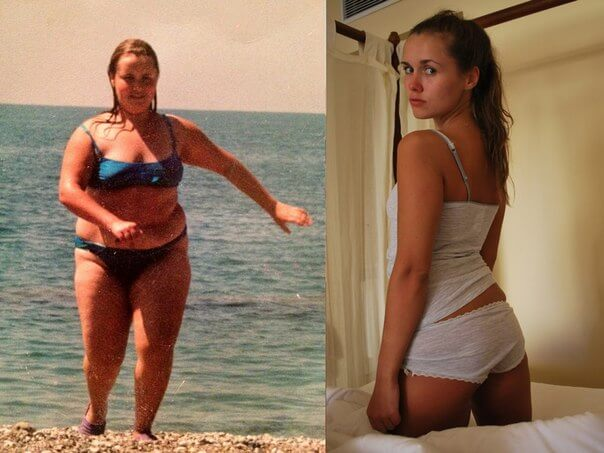

¡pérdida De Peso Rápida! Este Producto Elimina 5 Kg En 9 Días!
¡Hola, chicos! Todo el mundo se ha dado cuenta de que he perdido mucho peso y me han empezado a bombardear con preguntas. He intentado responderos y daros consejo a todos, pero no lo he conseguido. Con tantos mensajes como tenía, tendría que haberme tirado todo el día en Internet. Entonces, decidí escribir esta publicación para responder a la pregunta: " ¿Cómo has conseguido adelgazar 34 kilos? " (Esto no significa que no podáis escribirme para preguntarme lo que queráis. Es solo para hacer mi vida más fácil).
descuento del 50 % AHORA!
Antecedentes
Yo nunca he estado delgada, pero empecé a notar que estaba engordando cada vez más. Me salierontres pliegues terribles en la barriga, parecía un bulldog en bikini. Y cada vez tenía másgrandes las caderas, las piernas y el culo. Decidí conseguir un cuerpo sano y en forma por todos los medios, así que dejé de comer comida frita y grasienta y dejé a un lado las comidas copiosas antes de irme adormir. Salía a correr por las mañanas y a entrenar por las tardes en el gimnasio pero, en vezde perder kilos, seguía engordando todavía más.
Después de un mes, mi peso llegué a unosterroríficos 89 kilos. Restringía mi dieta cada vez más, excluyendo la carne, el pan, los fritosy los dulces. Acabé comiendo solo frutas y verduras y no bebía otra cosa que no fuese agua. Megasté una pasta en tés y pastillas para adelgazar, pero nada me daba resultado. Después deun tiempo volvía a ganar los kilos que había perdido.
Ni las dietas ni las pastillas funcionan. ¡Son una estafa!
Entrenar es demasiado duro y lleva mucho tiempo empezar a ver progresos. Así que, ¿qué es lo que hice?
Tras miles de dietas, pastillas y horas en el gimnasio y cientos de euros invertidos en un entrenador personal, me rendí por completo. Un día me topé con un artículo sobre Choco Lite y decidí probarlo.
A pesar de que había leído que Demi Moore, Katy Perry, J-Lo y otras famosas habían perdido peso con este producto, yo tenía mis dudas. Pero ya lo había probado todo y estaba desesperada, ¡así que no tenía alternativa! Además, leí los comentarios sobre el producto y eran superpositivos.
Millones de mujeres de Europa y Estados Unidos se han deshecho de sus kilos de más gracias a Choco Lite.
Según una investigación, el 96,7 % de ellas perdió 11-17 kilos en tres semanas.
¡Estaba decidida! Entré en su sitio web, volví a leer toda la información y pedí el producto. Me llegó en un par de semanas. Leí las instrucciones y empecé a beber un vaso del cóctel todos los días, como sustituto del desayuno. ¡Funciona increíblemente bien!
¡Se paga en el momento de la recepción!
¡No se necesita tarjeta de crédito!
que no has visto nunca antes!
Resultados
Después de solo dos semanas, los resultados eran fascinantes: ¡Perdí 9,5kilos!
La hinchazón ha desaparecido y mi complexión ha mejorado mucho. Las caderas y la barriga se mehan deshinchado bastante. ¡Y mi humor ha mejorado! Empiezo a creer que puedo volver a estarguapa sin dietas ni ejercicio. ¡Así que sigo comiendo todo lo que quiero! Estaba harta de pasar hambre y entrenar...
Al finalizar la tercera semana, ¡perdí otros 4 kilos!
Estaba más en forma y eso me animó a empezar a subir por las escaleras en vez de coger siempreel ascensor. ¡Lo que antes me parecía un esfuerzo increíble paso a ser un placer divertido paramí! No podía creerme que me estuviera pasando todo aquello solo por seguir las sencillas instrucciones del paquete del producto. Si yo pude hacerlo,¡todo el mundo puede! Tres semanas pasan muy rápido y poco a poco perdí 10 kilos.
Conseguí alcanzar mi objetivo en 31 días.
Me desapareció la barriga, perdí 20 kilos y conseguí tener el cuerpo de mis sueños.
Hoy en día todavía no me lo puedo creer cuando me miro al espejo
Por cierto, Choco Lite fue testado por la Academia Nacional de Ciencias en el año 2012. Sus resultados hubieran sido una auténtica bomba, pero nunca los hicieron públicos.
Reconozco que podría haber llevado a la ruina a muchas empresas farmacéuticas, gimnasios, nutricionistas y clínicas sobrevaloradas. No te extrañes: ¡Chocolate Slim es ridículamente barato!
Ahora recomiendo Choco Lite a todos mis amigos y conocidos. Importante: hacer el pedido desde el sitio web oficial del producto, porque de lo contrario podrían estafarte. Yo estoy feliz con mis resultados y creo que tú también lo estarás. Olvídate de los estereotipos: ¡No necesitas dietas ni ejercicio para conseguir una bonita figura!
¡Deja de soñar con un cuerpo perfecto!
¡Consíguelo ya!
Estas son las respuestas a las preguntas que recibo en las redes sociales todos los días:
¿Tienes estrías?
No, Choco Lite no deja marcas ni estrías gracias al ácido clorogénico que contiene.
¿Y qué pasa con la piel? ¿Consigue estirarse así de rápido?
¡Así es! Ninguna de mis amigas que ha probado Choco Lite ni yo tenemos problemas de estríasni celulitis.
¿Qué debo comer? ¿Qué dieta debo seguir?
Como ya os he dicho, estoy en contra de todas esas dietas. Y además, no las necesitáis si tomáisChoco Lite regularmente.
¿Es verdad que no se debe comer nada después de las 6 p.m. si no queremos engordar?
¡Eso son estereotipos! ¡Debes comer cada vez que tengas hambre! Por supuesto, es mejor para tusalud y tu metabolismo si comes 4-5 veces al día, ¡pero no demasiado!
A todos aquellos que hayáis perdido peso con Choco Lite: por favor, compartid vuestrosresultados aquí. Ayudaréis a convencer a mucha gente de que funciona de verdad.¡Saludos!
¡Tengo buenas noticias! Unos representantes de la empresa de Choco Lite se han puesto en contacto conmigo para ofrecer un 50 % de descuento a los 100 primeros visitantes de mi blog que realicen un pedido aquí.
descuento del 50 % AHORA!